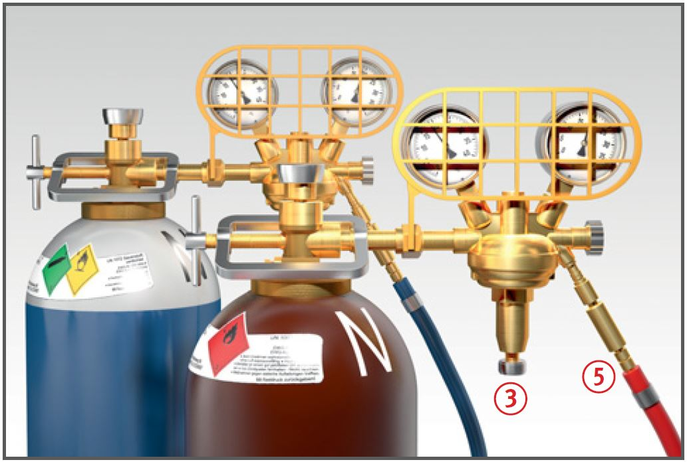
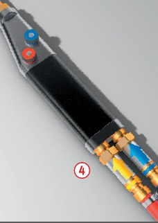
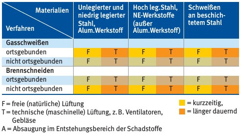

Es kann zu Bränden und
Explosionen, Verbrennungen
der Haut, Verletzung der Augen
und zu Vergiftung durch Gefahrstoffe
kommen.
Schutzmaßnahmen
Bei Schweiß-, Schneid- und
Lötarbeiten in Bereichen mit Brand- und Explosionsgefahr muss eine Schweißerlaubnis vorliegen.
Alle brennbaren Teile aus
der gefährdeten Umgebung entfernen.
Sicherheitsmaßnahmen zur
Verhinderung einer Brandentstehung in der Schweißerlaubnis festlegen, insbesondere
nicht entfernbare brennbare Teile abdecken,
Öffnungen abdichten.
Brandwache und geeignete
Feuerlöschmittel, z. B. Pulverlöscher, während der schweißtechnischen Arbeiten bereitstellen .
Nach Beendigung der Arbeiten
wiederholte Kontrolle der Arbeitsstelle auf Brandnester (Brandwache).
Auf Bau- und Montagestellen
möglichst Flaschengestelle oder -karren für den Transport verwenden .
Gasflaschen gegen Umstürzen
sichern und nicht in Durchfahrten, Durchgängen, Hausfluren, Treppenhäusern und in der Nähe von Wärmequellen lagern und aufstellen.
Nur geprüfte und zugelassene
Druckminderer benutzen und so
an die Gasflaschen anschließen,
dass beim Ansprechen der
Sicherheitsventile Personen
nicht gefährdet werden.


Lüftung in Räumen

Flaschenventile nicht ruckartig
öffnen. Vorher Einstellschraube
am Druckminderer bis zur
Entlastung der Feder zurückschrauben .
Sauerstoffarmaturen öl- und fettfrei halten.
Acetylen-Einzelflaschenanlagen,
die sich während der Gasentnahme
nicht im Sichtbereich
des Schweißers befinden, mit
Einzelflaschensicherungen oder
Gebrauchsstellenvorlagen ausrüsten.
Gasschläuche vor mechanischen Beschädigungen und gegen Anbrennen schützen und nicht über Armaturen an Flaschen aufwickeln.
Brenngas- und Sauerstoffschläuche müssen mindestens 3,00 m lang sein. Neue Gasschläuche vor dem erstmaligen Benutzen ausblasen.
Nur zugelassene und sichere
Schlauchverbindungsmittel
(Schlauchtüllen mit Schlauchschellen oder Patentkupplung) verwenden.
Auf sicheres Zünden des
Brenners achten und bei Flammrückschlägen Brenner erst nach Behebung der Störung erneut zünden.
Beim Brennschneiden schwer
entflammbaren Schutzanzug oder Lederschürze, Schweißerschutzhandschuhe, evtl. auch
Gamaschen tragen und Gehörschutz
benutzen.
Die Farbkennzeichnung für
Flüssiggasschläuche ist ab
07/2013 neu in der DIN EN 16129
geregelt.
Arbeitsmedizinische Vorsorge
Arbeitsmedizinische Vorsorge
nach Ergebnis der Gefährdungsbeurteilung
veranlassen (Pflichtvorsorge)
oder anbieten (Angebotsvorsorge).
Hierzu Beratung
durch den Betriebsarzt.